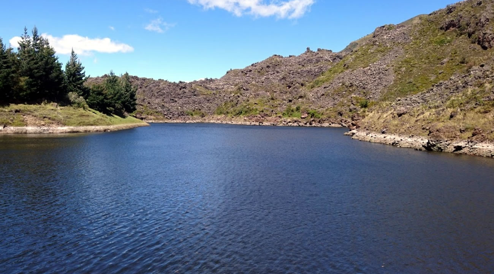

Pesca en el lago
Dedica una jornada a la pesca y disfruta la tranquilidad de la laguna. Consulta equipos, modalidades y tarifas.
Conoce más
AYLLU · LAGUNA TIPOPUGRO
Gastronomía en AYLLU, pesca y glamping.
Encuentra tu próxima experiencia en la naturaleza.
SERVICIOS Y EXPERIENCIAS AYLLU
Gastronomía, actividades al aire libre y descanso en un solo lugar. Elige cómo quieres vivir AYLLU.
Dedica una jornada a la pesca y disfruta la tranquilidad de la laguna. Consulta equipos, modalidades y tarifas.
Conoce másRecorre los senderos y descubre el paisaje a tu ritmo. Consulta las rutas y recomendaciones para tu visita.
Conoce másVive la laguna desde el agua con un paseo en bote. Consulta disponibilidad y condiciones del servicio.
Conoce másUn espacio de entretenimiento para los más pequeños, para compartir el paseo en familia.
Conoce másHaz una pausa para comer y compartir. Consulta la carta y los horarios del restaurante y la cafetería.
Conoce másContamos con espacio para estacionar durante tu visita. Consulta disponibilidad y condiciones de acceso.
Conoce másQuédate un poco más y disfruta una estancia en la naturaleza. Consulta opciones, servicios incluidos y fechas disponibles.
Conoce másEl paseo también
se disfruta a la mesa.
UN BUEN MOTIVO PARA REUNIRSE
Antes de explorar o después de una tarde de pesca, haz una pausa en AYLLU. Un espacio para sentarse, conversar y compartir la visita alrededor de la mesa.
Consulta la carta y horarios ↗Conoce las novedades del restaurante en nuestra página de Facebook.
PESCA & NATURALEZA
Disfruta una jornada a tu ritmo. Consulta modalidades, equipos, tarifas y condiciones antes de venir.
Disfruta el paisaje y comparte un día al aire libre. Pregúntanos por las actividades disponibles para tu visita.
QUE EL PLAN NO TERMINE TAN PRONTO
Combina tu visita a la laguna con una estancia en la naturaleza. Consulta las opciones de alojamiento, qué incluyen y la disponibilidad para tus fechas.
RESERVA TU EXPERIENCIA
Consulta fechas y cupos, elige tu opción y revisa los detalles de tu visita sin salir de la página.